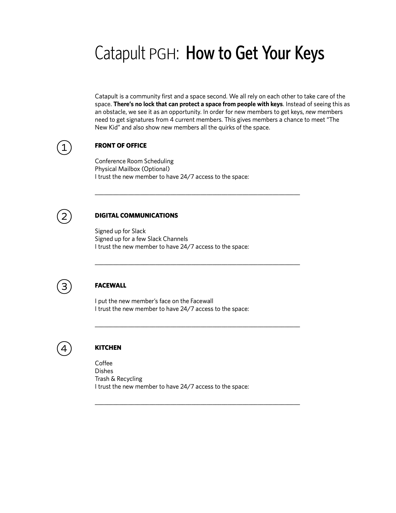

Solving Community Security with More Community
Problem: More Access = More Problems
As my coworking space gets larger, the space has been left open more often than I'd like. Some people suggested an alarm system or keyless entry system, some others suggested two membership tiers, a cheaper level without a key to the space, and a more expensive level with a key to the space–this would reduce the number of people with keys, hopefully increasing security. Aside from doors being left unlocked, there has been a growing concern of too many unknown/unvetted people around. The sense of security might be somehow related to a ratio of known versus unknown people in a space.
This isn't the type of feeling I'm trying to promote, so there needed to be a change.
Why I didn't Choose an Alarm System
When you have cameras in a space, or even sensors, you're giving off a particular signal. When you walk in to a bank that has plate glass, you see what I mean. Also, I feared the only change would be instead of members using the door lock incorrectly, we'd have members using the alarm incorrectly.
Why I Didn't Choose to Reduce The Number of Keys
I think the worse decision to make is associating trust with money. It seems like a subtle mental shortcut we make all the time. People with money must be more trustworthy… People can pay for trust. That would only mean that an outsider who wants to rip off the community would need 150usd instead of 50usd to get 20 macbook pros and a couple iMacs.
Also, reducing the amount of keys isn't a long term solution. If we want to grow as a community, we need more access not less.
Also also, by having different levels of access, there needs to be more "keeping track", and lists, and things I'm just generally not interested in doing/maintaining.
Someone Already Had the Solution
Nothing is new, and for a lot of inspiration on how to run a work community, I look to Alex Hillman at IndyHall. He decided to put the responsibility of deciding who to trust back on the community. In his Neighborhood Watch method, each new member has to get approval from several others to get a key.
Introducing the Catapult Key Policy
